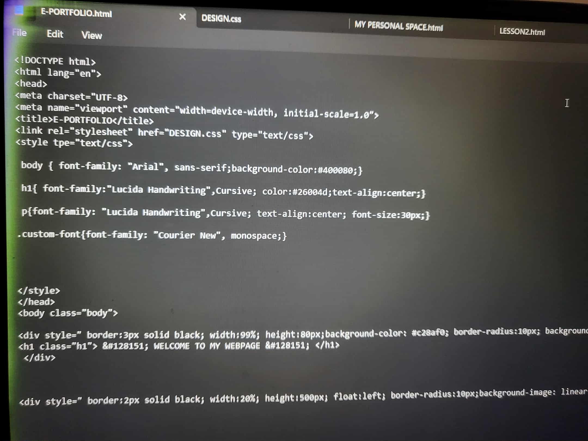

the HTML element you want to style; is a
pattern used to "find" or "select" the HTML
elements on a webpage to which a set of
CSS rules will be applied.
Property
the style attribute you want to modify; is a
named characteristic or attribute that
defines a specific aspect of how an HTML
element should be displayed or rendered by
the browser. Properties are used within
CSS declarations to apply styles to selected
elements.
Value
the weight of the attribute you want to apply to the
element property; is the specific setting or
configuration assigned to a CSS property. A property
and its value form a CSS declaration, which dictates
how an element should be styled
Declaration
is a single instruction that defines a specific
style for am element
Declaration block
fundamental part of a CSS rule. It is a
block of code that contains one or more CSS declarations,
which define the styling rules for the selected HTML
element(s).
The Style Sheet and its Parts
A set of instructions to a Web browser on how to
display various elements on a Web page is known as
style sheet
Every CSS (whether it is contained in a .css file, or
embedded in the head element of an HTML
document) is a series of instructions called
statements
How Do Style Sheet Work?
Style sheets are just text files, or text embedded in the
head of an HTML document, that help separate
content from appearance. The content of the page goes
into an HTML file. And the appearance goes into a
style sheet. But how does all this end up as a web
page in the reader’s browser?
A style sheet suggests the browser to
display a page in a particular way, how the
pages should be displayed in the browser.
Three Kinds of CSS
External Style Sheets
the most global of the three kinds of CSS because you
can apply the same one to an unlimited number of
pages
allows you to develop a consistent style across pages
easily allow you to change the layout of your entire
web site by simply changing the external style sheet
and every page is instantly updated
has a .css file extension
Embedded Style Sheets (Internal Style Sheets)
used for creating a document-wide style rule
placed within an HTML document, between the
and
used when you have a page that you want to present
in a different style from other pages
used for isolated changes to a headline, paragraph,
picture or other element
stored directly in the style attributes of the HTML tags
inline style sheets override external and embedded
style sheets
Inline Style Sheet
We can define the style for a single element
using the style attribute. There are various
tags that have the style attribute that would
represent its value.
Embedded Style SheetM
Embedded styles or Internal style sheets are
defined by the container tag and
placed within the head part of the HTML file. It
provides style to the whole HTML file.
Linked Style Sheets
External style sheets or linked styles are made outside
the HTML file.
An external style sheet is linked via . The
element allows you to establish document
relationships.
The element tells the browser to find the
specific style sheet.
The element can ONLY be used within the
section of the document.
The style sheet file does not contain ANY html code; it
contains only style rules.
A CSS file (filename.css) is a style sheet that does not
contain anything but the styles.
In order for it to take effect, it needs to be linked.
A linked file is simply just like embedded styles but
without all the HTML tags.
Can be written in any text editor and saved with a
filename extension of .css.
Using the external/linked style sheets, we can modify
web pages by just changing one CSS file.
Creating an External CSS file
The following steps will show how to
create and test a basic style sheet.
Open a blank document in
Notepad.
Type the style you want to define.
On the Menu bar, click File and
click Save.
Type your filename with the
extension .css and change the file
type to All Files.
Linking CSS file to HTML file
After creating your CSS file, open your HTML
file.
Type the following inside the HTML file:
.
Save your HTML file.
CSS Comments
Comments are used to explain the code, and will
help you edit the source code on a later date.
Comments are ignored by the browsers, therefore
you can place notifications, reminders and help
you increase code readability. A CSS comment
starts with /* and ends with */. Comments can
also span multiple lines.

I learned that inline styles are written directly in the HTML element, making them useful for quick, one-time styling. Embedded stylesheets are placed inside the